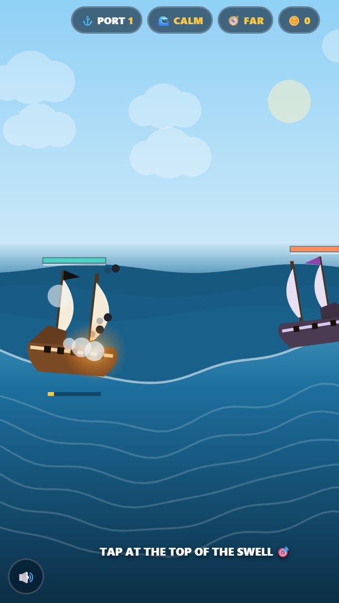

Actual gameplayFire at the top of the swell
Your galleon rides a living swell, and the roll of the hull physically aims your cannons. Tap and every gun fires in sequence like a drumroll — each shot leaving at its own elevation, so a volley loosed at the crest arcs across the water and one fired in the trough ploughs straight into it.
Why it works: Rhythm games hand you an abstract beat. This one hands you the sea: the metronome is a physical thing you watch rolling under your feet, so it teaches itself in a single wave cycle. Land the apex and the whole broadside collapses into one simultaneous roar — the skill ceiling and the money shot in the same moment.